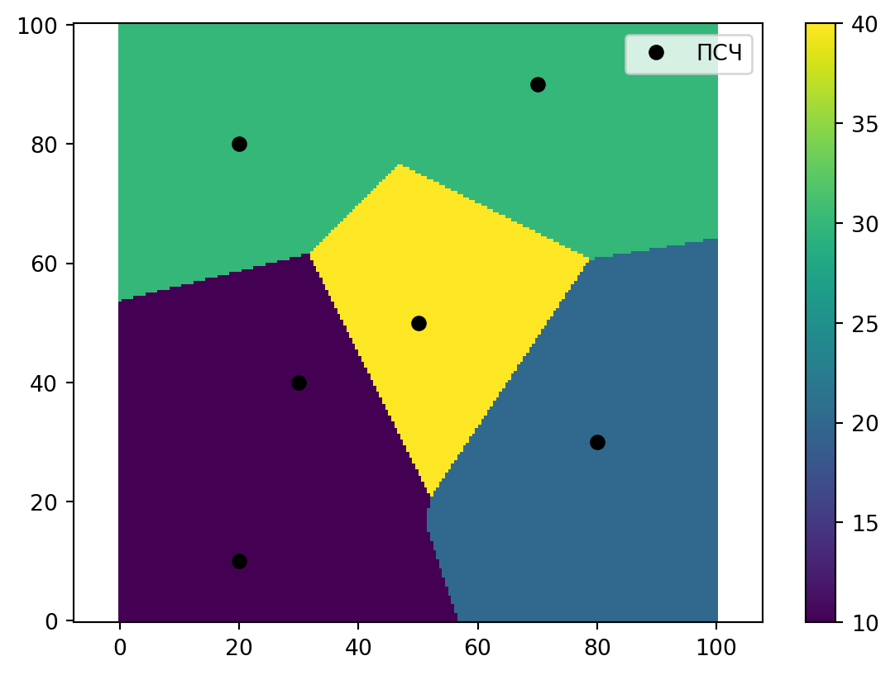
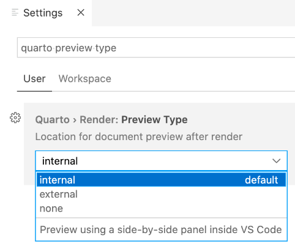

Суббота. Изучение возможностей построения зон обслуживания подразделений при помощи алгоритма интерполяции scipy.interpolate.NearestNDInterpolator
gantt
title Ход работы
dateFormat HH:mm
axisFormat %H:%M
section 1. НИР Дислокация
Алгоритм NearestNDInterpolator :a1, 14:00, 30m
Интерполяция профилей прибытия :a2, 16:20, 30m
section 2. Общие вопросы
Ознакомление с видео Qurto :active, b1, 15:00, 50m
Заметки по видео :b2, 15:30, 30m
НИР Дислокация
Алгоритм интерполяции NearestNDInterpolator
Предназначен для интерполяции значений в матрице на основе значения ближайшей интерполируемой точки. Может пригодиться для построения зон обслуживания пожарных подразделений на основе профиля прибытия – на основе известных данных о том какое именно подразделение прибывает в ближайшую точку.
from scipy.interpolate import NearestNDInterpolatorimport numpy as npimport matplotlib.pyplot as plt# создание поля (сетки)X = np.linspace(0, 100, 200) # np.linspace(Начальное значение, конечное, количество клеток)Y = np.linspace(0, 100, 200)X, Y = np.meshgrid(X, Y) # np.meshgrid(список координат по x, список координат по Y)# Списки значенийx = [20,20,80,30,50,70] # Координаты по оси Xy = [10,80,30,40,50,90] # Координаты по оси Yz = [10,30,20,10,40,30] # Вес клетки или идентификатор, клетки с одинаковым Z сливаются# Инерполяция (здесь вся магия)interp = NearestNDInterpolator(list(zip(x, y)), z)Z = interp(X, Y)# Показ на полотнеplt.pcolormesh(X, Y, Z, shading='auto')plt.plot(x, y, "ok", label="ПСЧ")plt.legend()plt.colorbar()plt.axis("equal")plt.show()

Результат интерполяции методом NearestNDInterpolator
Код ниже - Python, но его запуск я отключил, в связи с необходимостью подключения библиотек. Но вообще он работает.
from scipy.interpolate import NearestNDInterpolator
import numpy as np
import matplotlib.pyplot as plt
import geopandas as gpd
# Загрузка данных
gdf = gpd.read_file(r'D:\QGIS\Zhlzngrsk\fire_data\AP.gpkg')
# Добавление поля с индексом подразделения
units = list(gdf['unit'].unique())
gdf['unit_id'] = gdf['unit'].apply(lambda x: units.index(x))
# создание поля (сетки)
X = np.linspace(min(gdf.geometry.x), max(gdf.geometry.x), 200) # np.linspace(Начальное значение, конечное, количество клеток)
Y = np.linspace(min(gdf.geometry.y), max(gdf.geometry.y), 200)
X, Y = np.meshgrid(X, Y) # np.meshgrid(список координат по x, список координат по Y)
# Списки значений
x = gdf.geometry.x
y = gdf.geometry.y
z = gdf['unit_id']
# Инерполяция (здесь вся магия)
interp = NearestNDInterpolator(list(zip(x, y)), z)
Z = interp(X, Y)
# Отображение на полотне
fig, ax = plt.subplots(1, figsize=(10,6))
ax.pcolormesh(X, Y, Z, shading='auto', label="ПСЧ", cmap='turbo')
plt.show()
Можно настроить показ предпростмотра не во встроенном окне VSC а во внешнем браузере. Для этого в настройках нужно указать:

Разметка
Можно выделить подчеркиванием используя такой синтаксис: [подчеркиванием]{.underline}
Выпадающий код
Код можно скрыть
Код
print('Этот код по умолчанию скрыт')
Этот код по умолчанию скрыт
Демонстрация статьи в виде презентации
Очень интересно показано как можно туже самую статью представить в виде презентации!
В целом мы это и так знали, но все равно интересно.
Кастомизация навигационной панели
Очень интересно показано как можно настраивать навигационную панель сайта – наверняка это может однажды пригодиться:
Публикация Quarto
В этом месте рассказывается про то как можно отправить сайт на публикацию прямо из Quarto. Очень удобно как по мне. Но попробовав на домашнем ПК выяснилось , что для работы нужен установленный Git под VSC. Дома я не ставлю, чтобы не захламлять компьютер, но на работе попробую.